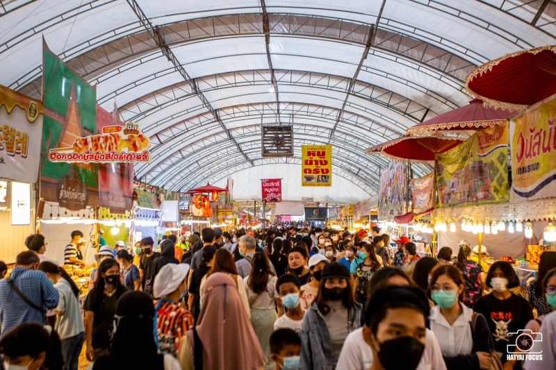
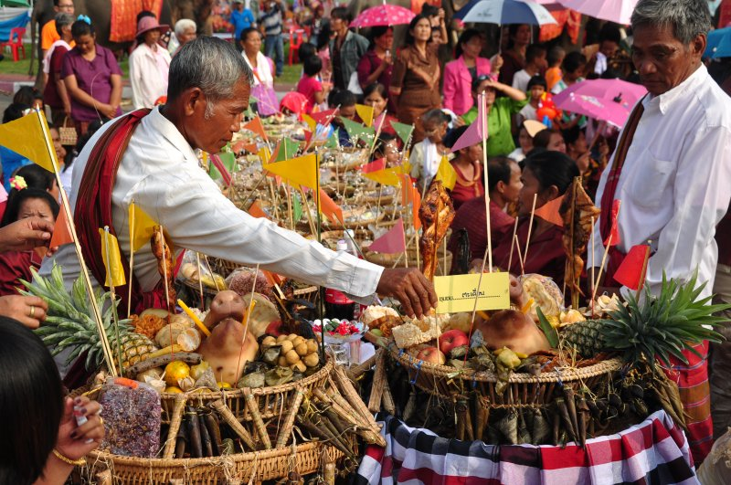
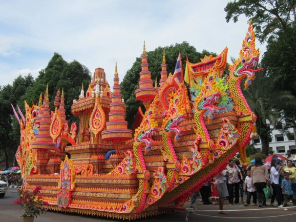

งานประเพณีสงกรานต์ จัดขึ้นในวันที่ 13 เมษายน ของทุกปี ทางอำเภอหาดใหญ่มีการจัดงานขึ้นที่บริเวณถนนนิพัทธ์อุทิศ 1, 2, 3 ตั้งแต่เช้าถึงเย็น ชาวมาเลเซียและสิงคโปร์นิยมเดินทางมาร่วมสนุกกับชาวไทยในเทศกาลนี้เป็นที่ สนุกสนาน
งานเกษตรภาคใต้ จัดเดือนกรกฎาคม-สิงหาคม เป็นประจำทุกปี โดยคณะทรัพยากรธรรมชาติ มหาวิทยาลัยสงขลานครินทร์ เป็นงานที่มีขึ้นเพื่อส่งเสริมการเกษตร ในงานมีกิจกรรมที่เกี่ยวข้องกับการเกษตรและอุตสาหกรรมเกษตร เช่น การจำหน่ายผลิตผลผลิตภัณฑ์การเกษตรจากจังหวัดภาคใต้ การประกวดผลิตผล การสาธิตต่าง ๆ
งานเทศกาลทำบุญเดือนสิบ เป็นงาน ประเพณีของชาวไทยภาคใต้ เกิดจากความเชื่อที่ว่าช่วงแรม 1-15 ค่ำเดือนสิบ วิญญาณของญาติพี่น้องผู้ล่วงลับไปแล้วโดยเฉพาะผู้ที่ยังไม่ได้ไปเกิด จะได้รับการปลดปล่อย ให้มาพบญาติพี่น้องในเมืองมนุษย์ ผู้ที่ยังมีชีวิตอยู่ก็จะจัดหาอาหารต่างๆไปทำบุญตามวัดเพื่ออุทิศส่วนกุศล ให้แก่ญาติที่ล่วงลับไปแล้ว ที่อำเภอสทิงพระจะจัดงานเทศกาลนี้แปลกไปจากที่อื่น คือมีการแห่หุ่นทองสูงเพื่อใช้แทนญาติหรือผู้อาวุโสที่เป็นที่นับถือของชาว บ้าน
งานประเพณีลากพระและตักบาตรเทโว จัดขึ้น เป็นประจำทุกปีในวันแรม 1 ค่ำ เดือน 11 ประมาณเดือนตุลาคม ณ อำเภอเมือง พิธีจะเริ่มก่อนวันงานด้วยการห่มผ้าพระเจดีย์บนยอดเขาตังกวน ในวันงานเวลาเช้าจะเป็นพิธีตักบาตรเทโวบริเวณเชิงเขาตังกวน พระสงฆ์หลายร้อยรูปจะเดินลงมาจากเขาตังกวนเพื่อรับบิณฑบาตรจากพุทธศาสนิกชน ตอนสายจะมีเรือพระจากวัดต่างๆในเขตจังหวัดสงขลาเคลื่อนผ่าน ให้พุทธศาสนิกชนได้ร่วมทำบุญและลากพระ ตามความเชื่อที่ว่าจะได้บุญกุศลสูง เรือพระจะมารวมกันที่บริเวณสระบัวเพื่อร่วมประกวดการตกแต่งเรือพระ นอกจากนี้ภายในงานยังมีการแสดงศิลปวัฒนธรรมอีกด้วย